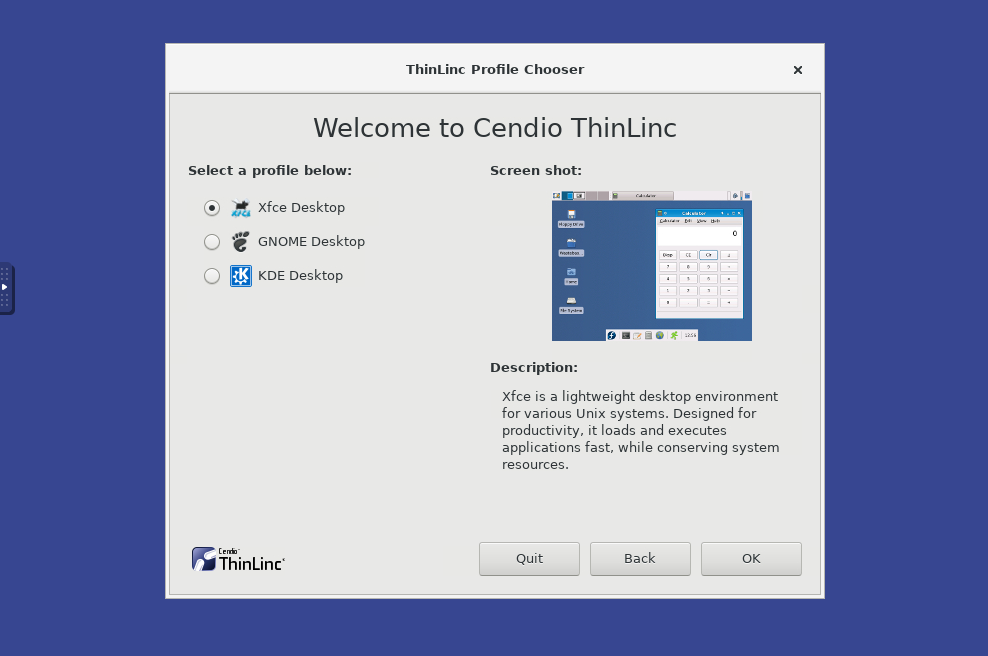

We will teach you two different ways to connect to UPPMAX. From UPPMAX point of view it doesn’t matter which one you use, and you can change whenever you want to or even use both ways simultaiously. The first one is a text-based SSH connection, and the other one is a graphical remote desktop. The latter one is useful if you need to view images or documents in GUI programs without having to first download the image/document to your own computer first. Since it is using graphics, it will require you to have an internet connection that is good and stable.
The reason we will teach you two ways is that some parts of this course will require you to view plots and images, and adding an additional download step would just unneccesarily complicate things.
1 SSH connection
Let’s look at the text-based SSH approach first. This type of connection work just fine even on slow internet connections since it only transmitts small amounts of text when you work with it. You will need an SSH program to do this, which fortunately is included in most major operating systems:
- Linux: Use Terminal (Included by default)
- OSX: Use Terminal (Included by default)
- Windows: Use Powershell or Command prompt, both should be installed by default
Fire up the available SSH program and enter the following:
$ ssh username@rackham.uppmax.uu.seReplace username with your UPPMAX username.
Enter your password when prompted. As you type, nothing will show on the screen. No stars, no dots. It is supposed to be that way. Just type the password and press enter, it will be fine.
Now your screen should look something like this:
dahlo@dahlo-xps ~ $ ssh dahlo@rackham.uppmax.uu.se
Last login: Fri May 18 15:03:59 2018 from mi04.icm.uu.se
_ _ ____ ____ __ __ _ __ __
| | | | _ \| _ \| \/ | / \ \ \/ / | System: rackham4
| | | | |_) | |_) | |\/| | / _ \ \ / | User: dahlo
| |_| | __/| __/| | | |/ ___ \ / \ |
\___/|_| |_| |_| |_/_/ \_\/_/\_\ |
###############################################################################
User Guides: http://www.uppmax.uu.se/support/user-guides
FAQ: http://www.uppmax.uu.se/support/faq
Write to support@uppmax.uu.se, if you have questions or comments.
dahlo@rackham4 ~ $Now you are connected to UPPMAX and can start working on the labs.
2 Remote desktop
You can work on UPPMAX interactively through a graphical-user-interface (GUI) desktop environment using ThinLinc.
We have a ThinLinc server running at one of the login nodes which allows users to run a remote desktop. It can be reached from a web browser (Chrome and Firefox are the recommended web browsers) or from the ThinLink App. For more details please look here: https://uppmax.uu.se/support-sv/user-guides/thinlinc-graphical-connection-guide/
2.1 Web browser
To be able to login via a web browser you will have to set up two-factor authentication first. Follow the instructions at the UPPMAX homepage, and once you are done you can continue below.
- Go to the login page, https://rackham-gui.uppmax.uu.se/
- Enter your UPPMAX username.
- Enter your UPPMAX password, followed by your current two-factor authentication code. Eg. if your password is
hunter2and your current two-factor authentication code is123456you will enterhunter2123456as your password.
- It will ask you which profile you want to use, so first press the
Forwardbutton. Then you can choose which desktop environment you want to use.Xfceis pretty straight-forward and easy to use, but feel free to try either of them. You get to choose every time you login so it’s not a permanent choice.  - Once your desktop has been loaded, start a terminal either by clicking the black terminal icon at the bottom of the screen, or by pressing the
Applicationsbutton in the top left corner and selectTerminal Emulator.
2.2 ThinLink App
If you haven’t already done so, download the ThinLinc client matching your local computer (i.e Windows, Linux, MacOS X or Solaris) from https://www.cendio.com/thinlinc/download and install it.
-
you can click Advanced to be able to set the server name.
Change the Server setting to
rackham-gui.uppmax.uu.se.Change the Name setting to your UPPMAX username.
Set the Password setting to your UPPMAX password.
You do not need to change any other settings.
You will first come to the
ThinLinc profile chooser. Press theForwardbutton to continue. Then you can choose which desktop environment you want to use.Xfceis pretty straight-forward and easy to use, but feel free to try either of them. You get to choose every time you login so it’s not a permanent choice.Press the “Connect” button.
If you connect for the first time you will see the “The server’s host key is not cached …” dialog.
Once your desktop has been loaded, start a terminal either by clicking the black terminal icon at the bottom of the screen, or by pressing the
Applicationsbutton in the top left corner and selectTerminal Emulator.Two factor authentication: The ThinLinc client connects over SSH which means it may be required to present a two factor authentication code. If you need to use this when logging in with SSH you also need to use it when logging in with ThinLinc (it depends on where you connect from). The ThinLinc client does not know how to ask for the two factor code, so you will need to use the grace time feature. To do this, first you have to connect with regular SSH and present the required two factor code. Once you have logged in over SSH you can safely exit again. The login server will remember that you just logged in for a few minutes and will not ask for two factor authentication again, so make sure you do not wait too long to connect with the ThinLinc client.

{kind=link}
3 After connection to UPPMAX
From this point forward there is no difference between the two different ways of connection to UPPMAX. Both ways result in you having a terminal running on UPPMAX and from UPPMAX point of view they are the same.